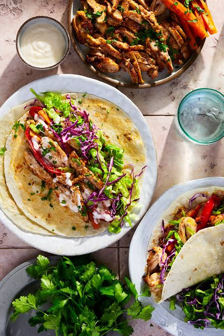

Shawarma is a popular Middle Eastern dish made with marinated meat, typically chicken, beef, or lamb, that is cooked on a vertical rotisserie and served in a flatbread with various toppings and sauces.

Shawarma with fresh vegetables and garlic sauce
STEPS
Ingredients:
1 lb of marinated meat (chicken, beef, or lamb)
1 cup of flour
1 tablespoon of olive oil
1 teaspoon of cumin
1 teaspoon of coriander
1 teaspoon of paprika
1 teaspoon of garlic powder
1 teaspoon of onion powder
Salt and pepper to taste
Instructions:
Preheat the oven to 375°F (190°C).
In a bowl, mix the flour with the spices and salt.
Coat the marinated meat with the spice mixture.
Place the coated meat on a baking sheet and bake for 20-25 minutes, or until cooked through.
While the meat is cooking, warm the flatbread in the oven.
Slice the cooked meat and serve it in the flatbread with your favorite toppings and sauces.